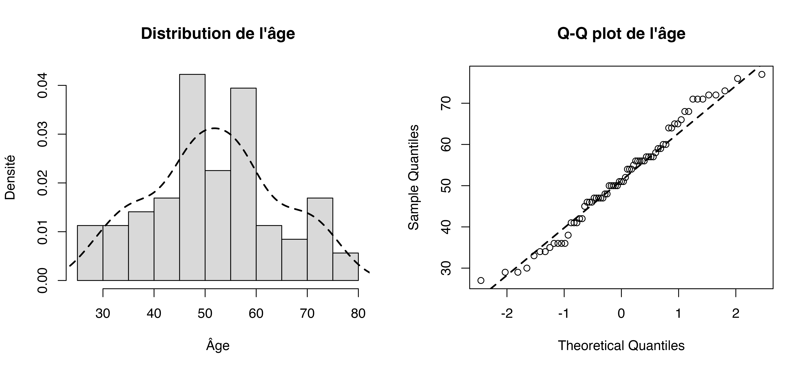
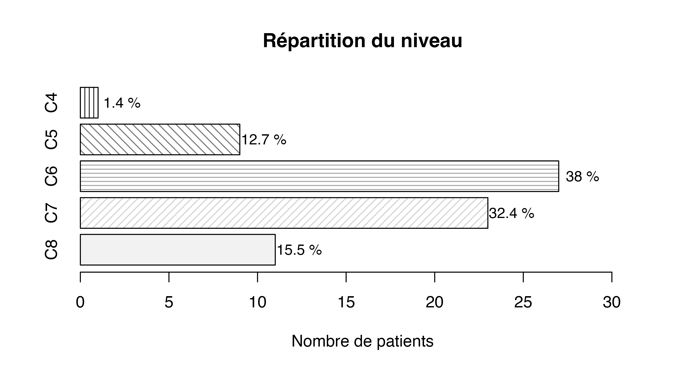
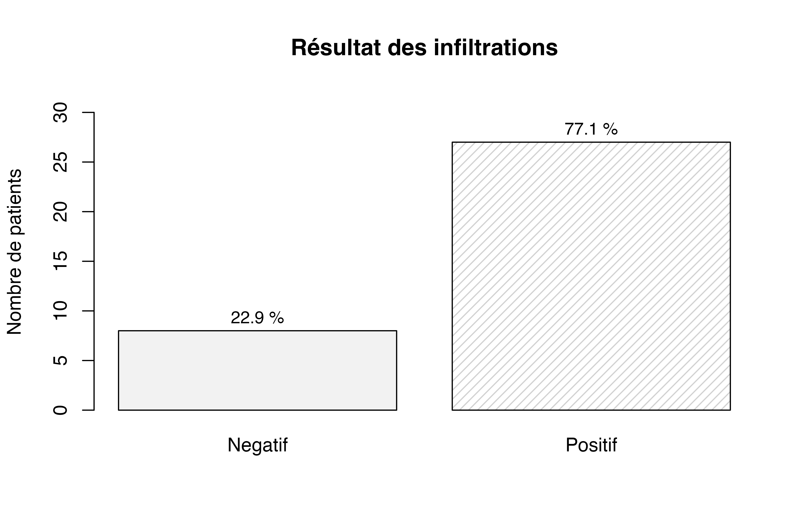
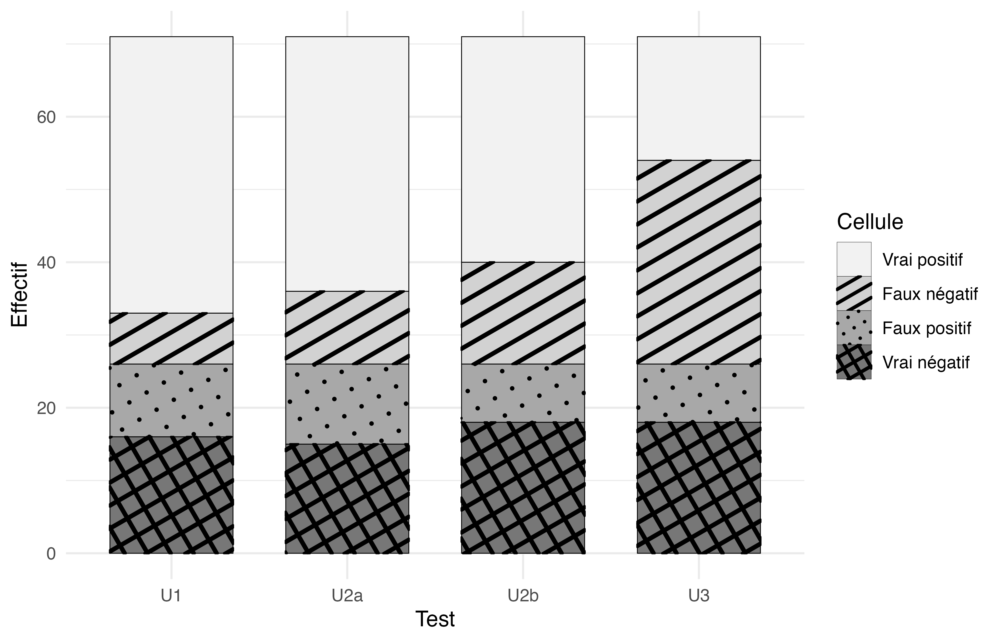
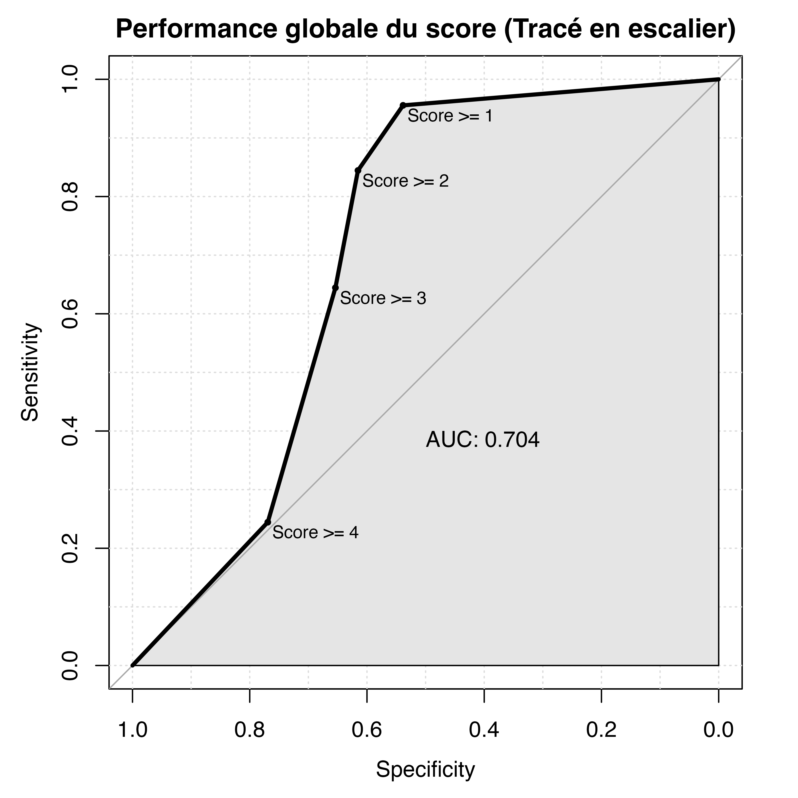
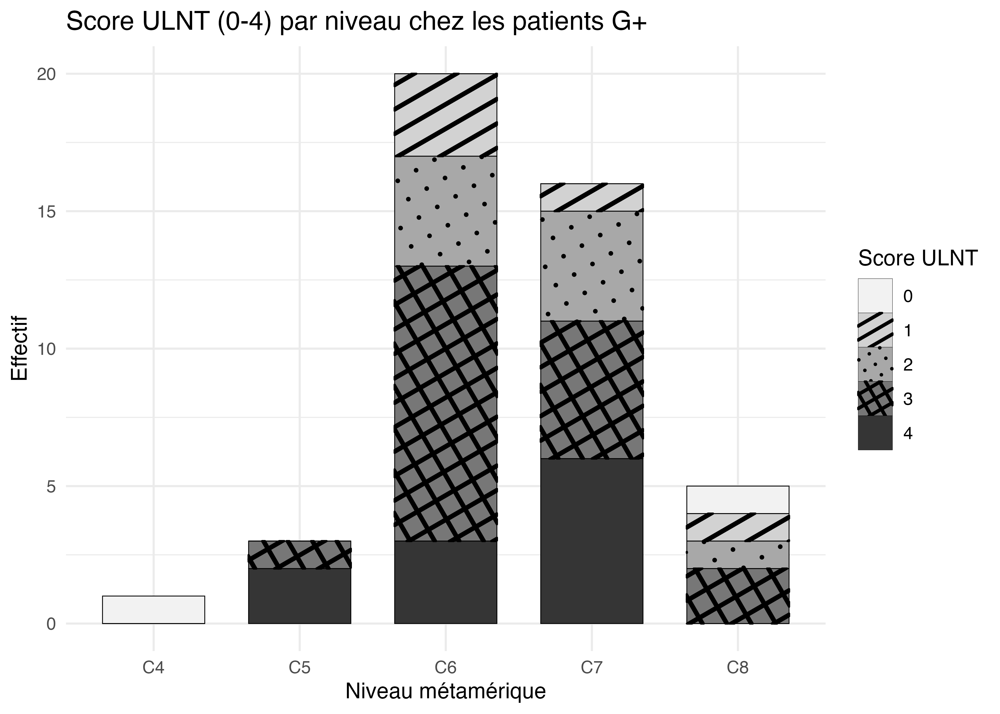

{kind=link}

Population analysée

Répartition du sexe
Télécharger le PNG · 600 dpi
Répartition du côté
Télécharger le PNG · 600 dpi{kind=link}

Répartition du niveau
Télécharger le PNG · 600 dpi
Distribution du BMI
Télécharger le PNG · 600 dpi
Répartition du tabac
Télécharger le PNG · 600 dpi
Statut d’infiltration
Télécharger le PNG · 600 dpi{kind=link}

Résultat des infiltrations
Télécharger le PNG · 600 dpiPerformances diagnostiques
{kind=link}

Tableaux de contingence par test
Télécharger le PNG · 600 dpi
Courbes ROC comparées
Télécharger le PNG · 600 dpi
Compromis sensibilité / spécificité
Télécharger le PNG · 600 dpi
Accord inter-observateur
Télécharger le PNG · 600 dpiScore de positivité

Contribution au gain de sensibilité
Télécharger le PNG · 600 dpi
Contribution au gain de spécificité
Télécharger le PNG · 600 dpi
Performance selon le seuil
Télécharger le PNG · 600 dpi{kind=link}

Courbe ROC du score global
Télécharger le PNG · 600 dpiAnalyses par niveau métamérique

Effectifs de NCB par niveau
Télécharger le PNG · 600 dpi
Score ULNT par niveau
Télécharger le PNG · 600 dpi
Niveaux chez les cas confirmés
Télécharger le PNG · 600 dpi{kind=link}

Score par niveau chez les cas confirmés
Télécharger le PNG · 600 dpi
VP, FN, FP et VN par test et par niveau
Télécharger le PNG · 600 dpi
Sensibilité et spécificité par niveau
Télécharger le PNG · 600 dpi